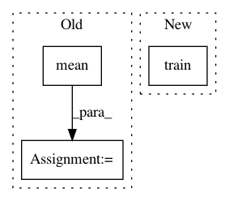

bea3a486261d3f6238316224605b684db1e5bca7,Tars/models/custom_loss_model.py,CustomLossModel,train,#CustomLossModel#Any#,36
Before Change
self.distributions.train()
self.optimizer.zero_grad()
loss = self.loss_cls.estimate(train_x).mean()
// backprop
loss.backward()
After Change
def train(self, train_x, **kwargs):
self.distributions.train()
return super().train(train_x, **kwargs)
def test(self, test_x, **kwargs):
self.distributions.eval()
In pattern: SUPERPATTERN
Frequency: 3
Non-data size: 3
Instances
Project Name: masa-su/pixyz
Commit Name: bea3a486261d3f6238316224605b684db1e5bca7
Time: 2018-10-16
Author: masa@weblab.t.u-tokyo.ac.jp
File Name: Tars/models/custom_loss_model.py
Class Name: CustomLossModel
Method Name: train
Project Name: automl/SMAC3
Commit Name: 640a3574b411e4c91add7acd3fa21595d8f63c28
Time: 2016-03-07
Author: lindauer@informatik.uni-freiburg.de
File Name: smac/epm/rfr_imputator.py
Class Name: RFRImputator
Method Name: impute
Project Name: masa-su/pixyz
Commit Name: bea3a486261d3f6238316224605b684db1e5bca7
Time: 2018-10-16
Author: masa@weblab.t.u-tokyo.ac.jp
File Name: Tars/models/ml.py
Class Name: ML
Method Name: train